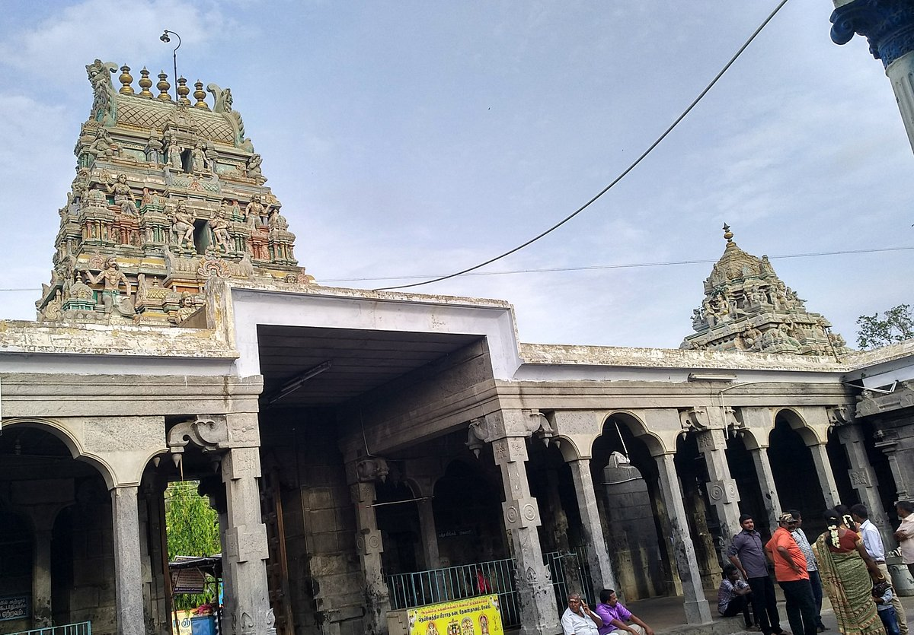
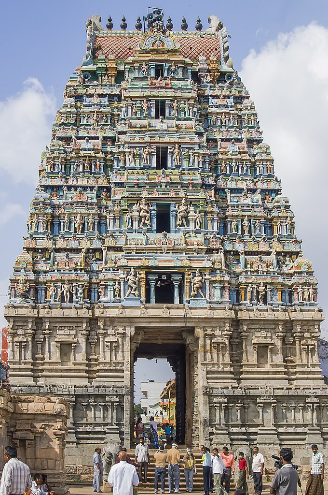
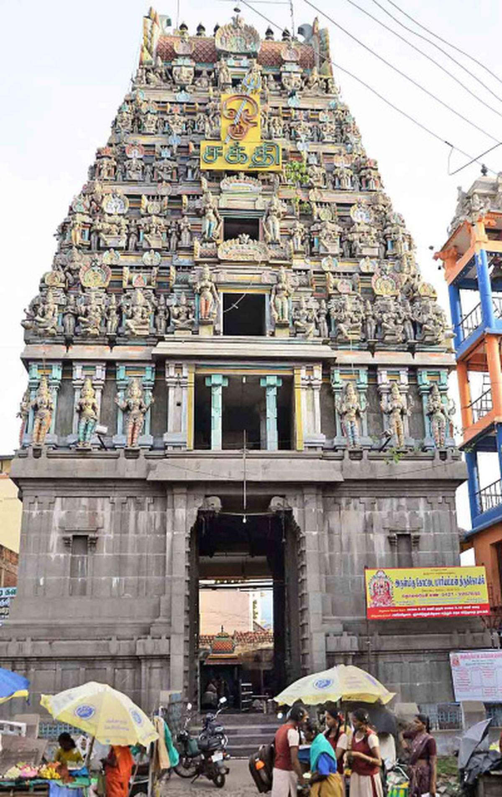
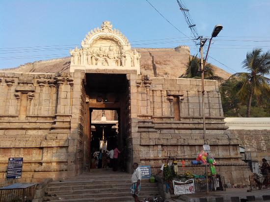

Salem, also known as Mango City, is a vibrant city located in the Salem district of Tamil Nadu. The district is famous for its rich cultural and religious heritage, with numerous temples attracting devotees and visitors from all over. Explore the divine aura and architectural marvels of these famous temples in Salem district.
Arulmigu Sugavaneswarar Temple
Arulmigu Sugavaneswarar Temple, situated in Salem, is a revered temple dedicated to Lord Shiva. The temple is known for its ancient architecture and serene ambiance. The presiding deity, Lord Sugavaneswarar, is believed to fulfill the wishes of devotees. The annual Panguni Uthiram festival is celebrated here with great enthusiasm.
Read More ->Kailasanathar Temple, Tharamangalam
Kailasanathar Temple, located in Tharamangalam, is a renowned ancient temple dedicated to Lord Shiva. The temple showcases intricate carvings and beautiful sculptures. It is a center of spirituality and attracts devotees seeking blessings and solace. The annual Maha Shivaratri festival is celebrated with grandeur.
Read More ->Arulmigu Angalamman Temple, Mettur

Arulmigu Angalamman Temple, situated in Mettur, is a famous temple dedicated to Goddess Angalamman. The temple is known for its colorful festivals and rituals. Devotees visit this temple to seek the blessings of the goddess and participate in the annual Panguni Peruvizha, a grand festival celebrated here.
Read More ->Arulmigu Maragathambigai Chandra Choodeswarar Temple, Karur

Arulmigu Maragathambigai Chandra Choodeswarar Temple, located in Karur, is a famous temple dedicated to Lord Shiva and Goddess Parvati. The temple is renowned for its ancient architecture and the divine presence of the deities. Devotees visit this temple to seek marital harmony and prosperity.
Read More ->Arulmigu Mariamman Temple, Veeraganur

Arulmigu Mariamman Temple in Veeraganur is a sacred temple dedicated to Goddess Mariamman. The temple is famous for its annual festival, Thai Poosam, which attracts devotees from far and wide. The temple premises and surroundings exude a divine atmosphere, offering solace to devotees.
Read More ->Arulmigu Kottai Mariamman Temple, Salem
Arulmigu Kottai Mariamman Temple, situated in Salem, is a revered temple dedicated to Goddess Mariamman. The temple is known for its grand architecture and the annual Mariamman festival, which showcases vibrant processions and cultural events. Devotees seek the blessings of the goddess for protection and prosperity.
Read More ->Arulmigu Narasimha Swamy Temple, Namakkal
Arulmigu Narasimha Swamy Temple, located in Namakkal, is a famous temple dedicated to Lord Narasimha. The temple is perched on a hill and offers breathtaking views of the surrounding landscape. Devotees visit this temple to seek the blessings of Lord Narasimha and experience spiritual serenity.
Read More ->Arulmigu Agneeshwarar Temple, Tharamangalam

Arulmigu Agneeshwarar Temple, situated in Tharamangalam, is a prominent temple dedicated to Lord Shiva. The temple is known for its Dravidian-style architecture and spiritual ambiance. Devotees flock to this temple to seek the blessings of Lord Agneeshwarar and experience inner peace.
Read More ->